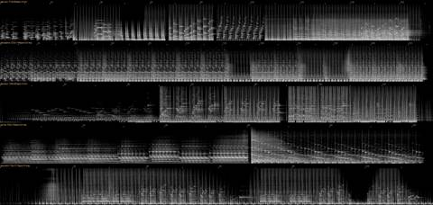
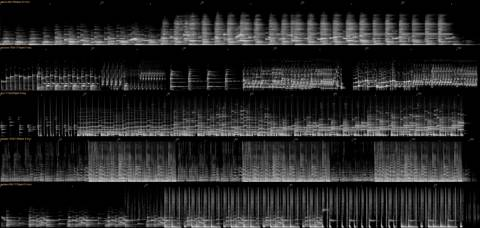
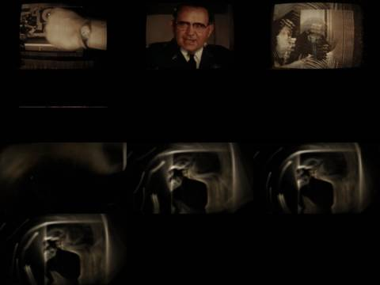
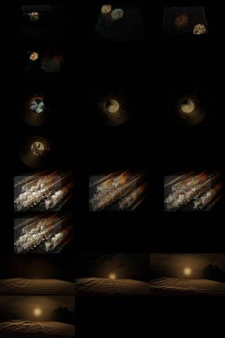
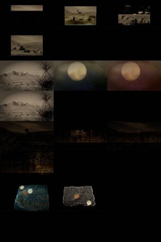
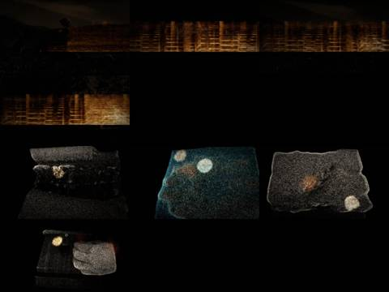

Afterlight / V Mosaic / AFL-12
V · Mosaic · AFL-12 of 22 · 2:58
The mix
The note that produced it
“The voices are not good.” Find the longest audio possible; more sound design, ramps, echoes; elongated time, deep warm reverb.
“I want each to be a mosaic assemblage of the tracks, never the whole track. Each a separate video experiment to see the samples, get the groove.”
“Make one song out of these samples,” about two and a half to three minutes.
What was made
One set made from nine tracks of the Warm Dome & Golden Record sessions, tempo climbing from 83 to 128 bpm. Each passage plays in its source track’s own picture technique, and the seam between two techniques burns away and sheds embers.
Sun → Copper Glow ten semitones down → Beckoning grains → Takumi → golden record → Warmth over Warm Dome → Picture one-shots → Copper Glow at 128 → Dawn at half speed
What came back
The note on this version, which produced AFL-13 Takumi Archive:
Use only the first 29 seconds.
Images made while working: contact sheets, check frames, spectrograms, the stills compared before and after a fix. Tap one to see it full size.















No separate critic agent was run on this cut. The critique came from the director, in the notes on either side of it.
On the cut before
“The voices are not good.” Find the longest audio, elongate time with echo and deep warm reverb, and make each track a mosaic of its samples, “never the whole track.”
On this cut
Use only the first 29 seconds.
Sample map
Every sound placed in the 2:58 study, 200 events by layer, coloured by the track it was cut from. The bars under the map are the whole source tracks; the lit spans are the parts actually used (approximate: stretched and frozen samples are counted by where they start).
The recipe
The function that composed this study, exactly as it ran.
"""The combined mix: one song made from all ten tracks' samples, played like a set.
The tempo climbs from the Sun groove (83) through Takumi (99.6) and Warmth / Warm Dome (118) to Copper Glow (128);
each handover passes through a frozen wash or an echo throw so the keys never collide head-on."""
import numpy as np
import sampler as S
from sampler import Mix, cut, loop, period, snap, resample, reverb, echo, freeze, sweep, tapestop, crackle, lp, hp
from compose import steps, play_pattern, ember, place_kicks
SR = S.SR
m = Mix(178)
m.put('bed', crackle(178, 18, 0.04), 0, 1, None, None, 'crackle')
# ---- 1. sun: the opening, then its groove; the first Copper line far below, in B minor under D major
intro = cut('sun', 0.0, 9.3); m.put('a', intro, 0.0, 1.0, 'sun', 0.0, 'intro'); m.put('ember', ember(intro, 10, 0.4), 0, 1, 'sun', 0, 'tail')
K = snap('sun', 9.30); P = 2.890; t = 9.3
m.put('a', loop('sun', K, P, 8), t, 1.0, 'sun', K, 'loop'); place_kicks(m, 'sun', K, P, t, 8)
deep = resample(cut('copper', 0.0, 7.5), 0.5612) # ten semitones down: 'Light-years in a second-hand song'
m.put('vox', deep, t + 2 * P, 0.75, 'copper', 0.0, 'lightyears-deep'); m.put('ember', ember(deep, 12, 0.5), t + 2 * P, 1, 'copper', 0.0, 'tail')
for i, a in enumerate((0.03, 2.35, 4.65, 6.95)):
m.put('stab', cut('sun', a, a + 1.2), t + (4 + i) * P + P / 2, 0.5, 'sun', a, 'stab')
t += 8 * P # 32.4
# ---- 2. handover: the sun groove echoes out over beckon's grains; the beckon pulse arrives
m.put('echo', echo(cut('sun', K, K + P / 2), P / 2, 0.6, 8), t, 0.8, 'sun', K, 'echo')
fz = freeze(cut('beckon', 14, 20), 14, grain=0.15, dens=34); fz *= np.minimum(np.linspace(0, 1, len(fz)) * 3, 1)[:, None] * np.minimum(np.linspace(1, 0, len(fz)) * 2, 1)[:, None]
m.put('wash', fz, t - 2, 0.6, 'beckon', 14, 'grain')
r = np.random.default_rng(5)
for k in range(18):
a = r.uniform(1, 47); at = t + r.uniform(0, 14); x = cut('beckon', a, a + r.uniform(0.08, 0.2), 0.01, 0.05)
m.put('splat', reverb(x, r.uniform(2, 6), 3000, 0.01, 0.6), at, 0.9, 'beckon', round(a, 2), 'splat')
B0 = snap('beckon', 37.59); PB = period('beckon', B0, 95.0, 8)
m.put('a', lp(loop('beckon', B0, PB, 2), 2200), t + 4, 0.8, 'beckon', B0, 'pulse'); t += 4 + 2 * PB # ~46.5
# ---- 3. takumi: sunny 1956 phrases, a channel-flipping bar, then slowed
A, Bt, C = snap('takumi', 0.21), snap('takumi', 8.93), snap('takumi', 18.35); PT = 4.82
m.put('a', sweep(loop('takumi', A, PT, 2), 400, 16000), t, 1.0, 'takumi', A, 'loopA'); t += 2 * PT
m.put('a', loop('takumi', Bt, PT, 1), t, 1.0, 'takumi', Bt, 'loopB')
sa, sb, sc = steps('takumi', A, PT, 16), steps('takumi', Bt, PT, 16), steps('takumi', C, PT, 16)
for i in range(16):
j = (i // 2) % 3; m.put('flip', [sa, sb, sc][j][i], t + PT + i * PT / 16, 1.0, 'takumi', round([A, Bt, C][j] + i * PT / 16, 3), 'flip')
t += 2 * PT
slow = resample(loop('takumi', C, PT, 1), 0.75); m.put('a', slow, t, 0.9, 'takumi', C, 'slow')
m.put('ember', ember(slow[-2 * SR:], 12, 0.5), t + len(slow) / SR - 2, 1, 'takumi', C, 'tail'); t += len(slow) / SR # ~72
# ---- 4. break: the magic circle's ring; 'golden record' thrown into the dark
m.put('wash', freeze(cut('circle', 66, 72), 10, grain=0.3, dens=20), t - 1, 0.5, 'circle', 66, 'ring')
m.put('vox', echo(cut('copper', 137.0, 139.4), 0.51, 0.6, 9, 0.85), t, 0.85, 'copper', 137.0, 'goldenrecord'); t += 6.0 # ~78
# ---- 5. warmth with the Warm Dome groove beneath it (both ~118)
G1 = snap('warmth', 14.44); PW = 2.030; GD = snap('golden', 22.74); PGd = 2.042
for bar in range(12):
m.put('a', loop('warmth', G1 if bar < 8 else snap('warmth', 44.3), PW, 1), t + bar * PW, 1.0, 'warmth', G1, 'loop')
if bar >= 2: m.put('b', resample(loop('golden', GD + (bar % 4) * PGd, PGd, 1), PGd / PW), t + bar * PW, 0.6, 'golden', round(GD + (bar % 4) * PGd, 2), 'dome')
place_kicks(m, 'warmth', G1, PW, t, 12)
m.put('wash', freeze(cut('warmth', 60, 66), 10), t + 8 * PW, 0.4, 'warmth', 60, 'freeze'); t += 12 * PW # ~102
# duck out, as the song does
m.put('a', cut('warmth', 88, 88 + 2 * PW), t, 1.0, 'warmth', 88, 'duckout')
m.put('echo', echo(cut('warmth', G1 + 7 * PW, G1 + 7 * PW + PW / 4), PW / 4, 0.62, 10), t, 0.7, 'warmth', G1 + 7 * PW, 'echo'); t += 2 * PW # ~106
# ---- 6. the picture reassembled at the same tempo: its one-shots as the beat
hits = {nm: (snap('picture', a, 0.2), cut('picture', snap('picture', a, 0.2), snap('picture', a, 0.2) + 0.9, 0.002, 0.08)) for nm, a in [('low', 3.24), ('stab', 8.1), ('blip', 33.8), ('pluck', 22.6), ('bell', 29.1)]}
st = PW / 8
for bar in range(6):
for nm, pos in {'low': [0, 3, 8, 11], 'stab': [4, 12], 'blip': [2, 6, 10, 14], 'pluck': [7, 15], 'bell': [5]}.items():
for p in pos: m.put('c', hits[nm][1], t + bar * PW + p * st, 0.9 if nm == 'low' else 0.6, 'picture', round(hits[nm][0], 2), nm)
m.kick_at([t + b * PW + p * st for b in range(6) for p in (0, 3, 8, 11)])
m.put('wash', freeze(cut('phosphor', 120, 127), 12), t, 0.4, 'phosphor', 120, 'freeze')
# riser: the last picture bar tape-speeds up into Copper's tempo
t += 6 * PW # ~118
# ---- 7. copper: the groove at 128 with every chosen line
Gc = snap('copper', 85.0); PC = period('copper', Gc, 128.0, 8)
m.put('a', sweep(loop('copper', Gc, PC, 2), 250, 15000), t, 1.0, 'copper', Gc, 'groove'); place_kicks(m, 'copper', Gc, PC, t, 2)
m.put('vox', cut('copper', 0.0, 7.5), t, 1.0, 'copper', 0.0, 'lightyears'); t += 2 * PC
m.put('a', loop('copper', Gc, PC, 4), t, 1.0, 'copper', Gc, 'groove'); place_kicks(m, 'copper', Gc, PC, t, 4)
play_pattern(m, 'chop', steps('copper', 46.0, PC, 16), [0, 1, 0, 1, 4, 5, 4, 5, 8, 9, 10, 11, 8, 8, 8, 8], t, PC / 16, 0.9, 'copper', 46.0, PC, reps=2)
m.put('vox', cut('copper', 46.0, 46.0 + 2 * PC), t + 2 * PC, 1.0, 'copper', 46.0, 'carrytheglow'); t += 4 * PC
m.put('a', loop('copper', Gc, PC, 4), t, 1.0, 'copper', Gc, 'groove'); place_kicks(m, 'copper', Gc, PC, t, 4)
m.put('vox', cut('copper', 67.0, 81.0), t, 1.0, 'copper', 67.0, 'roomgoesgold'); t += 4 * PC # ~156
m.put('vox', cut('copper', 53.5, 60.0), t, 1.0, 'copper', 53.5, 'lightyearstogo')
m.put('a', tapestop(loop('copper', Gc, PC, 1), 1.6), t, 1.0, 'copper', Gc, 'tapestop'); t += PC
# ---- 8. after: dawn at half speed, the circle's echo, the record
sl = resample(cut('dawn', 45, 56), 0.5); sl = lp(sl, 4000) * np.minimum(np.linspace(0, 1, len(sl)) * 4, 1)[:, None] * np.minimum(np.linspace(1, 0, len(sl)) * 2, 1)[:, None]
m.put('wash', sl, t - 1, 0.7, 'dawn', 45, 'halfspeed')
m.put('vox', echo(cut('copper', 137.0, 139.4), 0.7, 0.55, 8, 0.8), t + 4, 0.6, 'copper', 137.0, 'goldenrecord')
m.put('ember', ember(cut('copper', 57, 60), 20, 0.9), t, 1, 'copper', 57, 'tail')
m.duck(['b', 'wash', 'bed', 'stab'], 0.5, release=0.25)
out = m.render()
e = np.abs(out).max(1); nz = np.nonzero(e > 0.003)[0]; end = min(len(out), nz[-1] + SR // 2)
out = out[:end]; out[-2 * SR:] *= np.linspace(1, 0, 2 * SR)[:, None]; m.n = end; m.dur = end / SR
for k in m.layers: m.layers[k] = m.layers[k][:end]
m.save('/home/claude/afterlight/mosaic/audio/mix.wav', out); print('mix', round(end / SR, 1), 's', len(m.events), 'events')
The picture technique
class MixEngine:
SECTIONS = [(0, 32.4, 'sun'), (32.4, 46.5, 'beckon'), (46.5, 72.0, 'takumi'), (72.0, 78.0, 'circle'), (78.0, 106.0, 'warmth'),
(106.0, 118.0, 'picture'), (118.0, 160.0, 'copper'), (160.0, 999.0, 'dawn')]
XF = 1.4
def __init__(s, ctx):
s.c = ctx; s.live = {}; r = np.random.default_rng(12)
f = gaussian_filter(r.random((H // 4, W // 4)), 10); f = (np.argsort(np.argsort(f.ravel())) / f.size).reshape(H // 4, W // 4)
s.nz = up(f.astype(np.float32)); s.emb = Embers(20000, 13)
def frame(s, t, dt):
out = None
for i, (a, b, nm) in enumerate(s.SECTIONS):
if not (a - s.XF - 2.0 <= t < b + s.XF): continue
if i not in s.live: s.live[i] = ENGINES[nm](s.c)
img = s.live[i].frame(t, dt)
if t < a - s.XF: continue # warming up unseen
u_in = 1.0 if i == 0 else np.clip(((t - (a - s.XF)) / s.XF) * 1.5 - s.nz * 0.5, 0, 1)
m = u_in[..., None] if np.ndim(u_in) else u_in
out = img * m if out is None else out * (1 - m) + img * m
if np.ndim(u_in) and 0.02 < float(np.mean(u_in)) < 0.98: # the seam burns: embers along the front
edge = np.abs(u_in - 0.5) < 0.04; ys, xs = np.nonzero(edge[::8, ::8]); k = np.random.default_rng(int(t * 97)).permutation(len(xs))[:120]
s.emb.emit(xs[k] * 8.0, ys[k] * 8.0, vx=30, vy=-60, T=1.0, life=2.0, spread=30)
for i in list(s.live):
if t > s.SECTIONS[i][1] + s.XF: del s.live[i]
s.emb.step(t, dt, wind=(40, -20)); out = (out if out is not None else 0) + s.emb.draw(t, 1.0)
return outFiles
The scripts that made this version, as plain text.
- compose.py254 linesthe nine mosaics: every cut, loop and freeze
- sampler.py154 linesloop, stretch, reverb, echo, freeze, tape stop
- mix.py85 linesthe 178-second set
- sound_design.py91 linesneedle drop, inhales, risers, sub, tape bus
- engines.py367 linesthe ten picture techniques
- vis_common.py106 linesshared embers, archive frames, the finish
- render.py41 linesrenders frames and encodes
- analyze.py21 linestempo and onsets of each source track
A film concept by Sosuke & Watson · CRASH LAB · PAELEO · CINEOSIS LAB